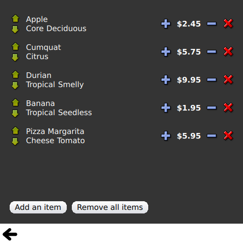

Qt Quick Examples - Views
This is a collection of QML model-view examples.

Views is a collection of small QML examples relating to model and view functionality. They demonstrate how to show data from a model using the Qt Quick view types. For more information, visit the Models and Views in Qt Quick page.
Running the Example
To run the example from Qt Creator, open the Welcome mode and select the example from Examples. For more information, visit Building and Running an Example.
Using GridView and PathView
GridView and PathView demonstrate usage of these types to display views.
GridView {
anchors.fill: parent
cellWidth: 100; cellHeight: 100
focus: true
model: appModel
highlight: Rectangle { width: 80; height: 80; color: "lightsteelblue" }
delegate: Item {
required property string icon
required property string name
required property int index
width: 100; height: 100
Image {
id: myIcon
y: 20; anchors.horizontalCenter: parent.horizontalCenter
source: parent.icon
}
Text {
anchors { top: myIcon.bottom; horizontalCenter: parent.horizontalCenter }
text: parent.name
}
MouseArea {
anchors.fill: parent
onClicked: parent.GridView.view.currentIndex = parent.index
}
}
}
Using Dynamic List
Dynamic List demonstrates animation of runtime additions and removals to a ListView.
The ListView.onAdd signal handler runs an animation when new items are added to the view, and the ListView.onRemove another when they are removed.
Item {
ListView.onAdd: SequentialAnimation {
PropertyAction { target: delegateItem; property: "height"; value: 0 }
NumberAnimation { target: delegateItem; property: "height"; to: 80; duration: 250; easing.type: Easing.InOutQuad }
}
ListView.onRemove: SequentialAnimation {
PropertyAction { target: delegateItem; property: "ListView.delayRemove"; value: true }
NumberAnimation { target: delegateItem; property: "height"; to: 0; duration: 250; easing.type: Easing.InOutQuad }
// Make sure delayRemove is set back to false so that the item can be destroyed
PropertyAction { target: delegateItem; property: "ListView.delayRemove"; value: false }
}
}
Expanding Delegates
Expanding Delegates demonstrates delegates that expand when activated.
It has a complex delegate the size and appearance of which can change, displacing other items in the view.
Item {
id: recipe
required property string title
required property string picture
required property string ingredients
required property string method
// Create a property to contain the visibility of the details.
// We can bind multiple element's opacity to this one property,
// rather than having a "PropertyChanges" line for each element we
// want to fade.
property real detailsOpacity : 0
MouseArea {
anchors.fill: parent
onClicked: recipe.state = 'Details';
}
// Lay out the page: picture, title and ingredients at the top, and method at the
// bottom. Note that elements that should not be visible in the list
// mode have their opacity set to recipe.detailsOpacity.
Row {
id: topLayout
x: 10; y: 10; height: recipeImage.height; width: parent.width
spacing: 10
Image {
id: recipeImage
width: 50; height: 50
source: recipe.picture
}
Item {
id: details
x: 10; width: parent.width - 20
anchors { top: topLayout.bottom; topMargin: 10; bottom: parent.bottom; bottomMargin: 10 }
opacity: recipe.detailsOpacity
}
// A button to close the detailed view, i.e. set the state back to default ('').
TextButton {
y: 10
anchors { right: background.right; rightMargin: 10 }
opacity: recipe.detailsOpacity
text: "Close"
onClicked: recipe.state = '';
}
states: State {
name: "Details"
PropertyChanges { target: background; color: "white" }
PropertyChanges { target: recipeImage; width: 130; height: 130 } // Make picture bigger
PropertyChanges { target: recipe; detailsOpacity: 1; x: 0 } // Make details visible
PropertyChanges { target: recipe; height: listView.height } // Fill the entire list area with the detailed view
// Move the list so that this item is at the top.
PropertyChanges { target: recipe.ListView.view; explicit: true; contentY: recipe.y }
// Disallow flicking while we're in detailed view
PropertyChanges { target: recipe.ListView.view; interactive: false }
}
transitions: Transition {
// Make the state changes smooth
ParallelAnimation {
ColorAnimation { property: "color"; duration: 500 }
NumberAnimation { duration: 300; properties: "detailsOpacity,x,contentY,height,width" }
}
}
}
Using Highlight
Highlight demonstrates adding a custom highlight to a ListView.
// Define a highlight with customized movement between items.
component HighlightBar : Rectangle {
width: 200; height: 50
color: "#FFFF88"
y: listView.currentItem.y
Behavior on y { SpringAnimation { spring: 2; damping: 0.1 } }
}
ListView {
id: listView
width: 200; height: parent.height
x: 30
model: PetsModel {}
delegate: PetDelegate {}
focus: true
// Set the highlight delegate. Note we must also set highlightFollowsCurrentItem
// to false so the highlight delegate can control how the highlight is moved.
highlight: HighlightBar {}
highlightFollowsCurrentItem: false
}
Using Highlight Ranges
Highlight Ranges shows the three different highlight range modes of ListView.
Rectangle { id: root property int current: 0 property bool increasing: true // Example index automation for convenience, disabled on click or tap SequentialAnimation { id: anim loops: -1 running: true ScriptAction { script: if (root.increasing) { root.current++; if (root.current >= aModel.count -1) { root.current = aModel.count - 1; root.increasing = !root.increasing; } } else { root.current--; if (root.current <= 0) { root.current = 0; root.increasing = !root.increasing; } } } PauseAnimation { duration: 500 } } ListView { id: list1 height: 50; width: parent.width model: PetsModel {id: aModel} delegate: petDelegate orientation: ListView.Horizontal highlight: Rectangle { color: "lightsteelblue" } currentIndex: root.current onCurrentIndexChanged: root.current = currentIndex focus: true } ListView { id: list2 y: 160 height: 50; width: parent.width model: PetsModel {} delegate: petDelegate orientation: ListView.Horizontal highlight: Rectangle { color: "yellow" } currentIndex: root.current preferredHighlightBegin: 80; preferredHighlightEnd: 220 highlightRangeMode: ListView.ApplyRange } ListView { id: list3 y: 320 height: 50; width: parent.width model: PetsModel {} delegate: petDelegate orientation: ListView.Horizontal highlight: Rectangle { color: "yellow" } currentIndex: root.current onCurrentIndexChanged: root.current = currentIndex preferredHighlightBegin: 125; preferredHighlightEnd: 125 highlightRangeMode: ListView.StrictlyEnforceRange } }
Using Sections
Sections demonstrates the various section headers and footers available to ListView.
// The delegate for each section header
Component {
id: sectionHeading
Rectangle {
width: container.width
height: childrenRect.height
color: "lightsteelblue"
required property string section
Text {
text: parent.section
font.bold: true
font.pixelSize: 20
}
}
}
ListView {
id: view
anchors.top: parent.top
anchors.bottom: buttonBar.top
width: parent.width
model: animalsModel
delegate: Text {
required property string name
text: name
font.pixelSize: 18
}
section.property: "size"
section.criteria: ViewSection.FullString
section.delegate: sectionHeading
}
Using Packages
Packages use the Package type to transition delegates between two views.
It has a Package object which defines delegate items for each view and an item that can be transferred between delegates.
Package { id: delegate required property int upTo required property int index required property string display Text { id: listDelegate; width: parent.width; height: 25; text: 'Empty'; Package.name: 'list' } Text { id: gridDelegate; width: parent.width / 2; height: 50; text: 'Empty'; Package.name: 'grid' } Rectangle { id: wrapper width: parent.width; height: 25 color: 'lightsteelblue' Text { text: delegate.display; anchors.centerIn: parent } state: delegate.upTo > delegate.index ? 'inGrid' : 'inList' states: [ State { name: 'inList' ParentChange { target: wrapper; parent: listDelegate } }, State { name: 'inGrid' ParentChange { target: wrapper; parent: gridDelegate x: 0; y: 0; width: gridDelegate.width; height: gridDelegate.height } } ] transitions: [ Transition { ParentAnimation { NumberAnimation { properties: 'x,y,width,height'; duration: 300 } } } ] } }
A DelegateModel allows the individual views to access their specific items from the shared package delegate.
DelegateModel { id: visualModel delegate: Delegate { upTo: root.upTo } model: myModel } ListView { id: lv height: parent.height/2 width: parent.width model: visualModel.parts.list } GridView { y: parent.height/2 height: parent.height/2 width: parent.width cellWidth: width / 2 cellHeight: 50 model: visualModel.parts.grid }
Using ObjectModel
ObjectModel uses an ObjectModel for the model instead of a ListModel.
ObjectModel {
id: itemModel
Rectangle {
width: view.width; height: view.height
color: "#FFFEF0"
Text { text: "Page 1"; font.bold: true; anchors.centerIn: parent }
Component.onDestruction: if (root.printDestruction) print("destroyed 1")
}
Rectangle {
width: view.width; height: view.height
color: "#F0FFF7"
Text { text: "Page 2"; font.bold: true; anchors.centerIn: parent }
Component.onDestruction: if (root.printDestruction) print("destroyed 2")
}
Rectangle {
width: view.width; height: view.height
color: "#F4F0FF"
Text { text: "Page 3"; font.bold: true; anchors.centerIn: parent }
Component.onDestruction: if (root.activeFocusprintDestruction) print("destroyed 3")
}
}
ListView {
id: view
anchors { fill: parent; bottomMargin: 30 }
model: itemModel
preferredHighlightBegin: 0; preferredHighlightEnd: 0
highlightRangeMode: ListView.StrictlyEnforceRange
orientation: ListView.Horizontal
snapMode: ListView.SnapOneItem; flickDeceleration: 2000
cacheBuffer: 200
}
Using Display Margins
Display Margins uses delegates to display items and implements a simple header and footer components.